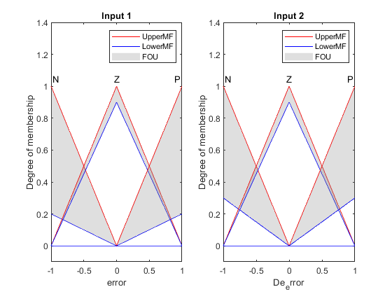
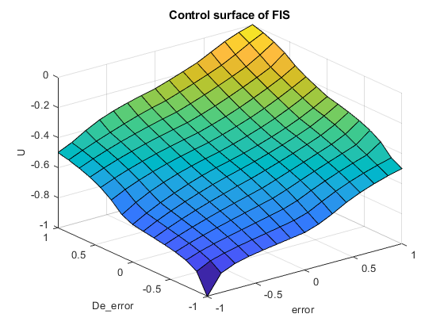

Contents
Control PID con FIS tipo 2
Declaración de el sistema
fis2= sugfistype2( ... 'NumInputs',2, ... 'NumInputMFs',3,... 'NumOutputs',1,... 'NumOutputMFs',5,... 'MFType','trimf',... 'AddRules','allcombinations',... 'Name','Fuzzy PID Control');
Declaracion de las Entradas
fis2.Inputs(1).Name="error"; fis2.Inputs(2).Name="De_error"; fis2.Inputs(1).Range=[-1 1]; fis2.Inputs(2).Range=[-1 1];
funciones de membresia de la entrada
MF del error
fis2.Inputs(1).MembershipFunctions(1).Name='N'; fis2.Inputs(1).MembershipFunctions(1).UpperParameters... =[-2 -1 0]; fis2.Inputs(1).MembershipFunctions(2).Name='Z'; fis2.Inputs(1).MembershipFunctions(2).UpperParameters... =[-1 0 1]; fis2.Inputs(1).MembershipFunctions(3).Name='P'; fis2.Inputs(1).MembershipFunctions(3).UpperParameters... =[0 1 2]; %MF de la derivada del error fis2.Inputs(2).MembershipFunctions(1).Name='N'; fis2.Inputs(2).MembershipFunctions(1).UpperParameters... =[-2 -1 0]; fis2.Inputs(2).MembershipFunctions(2).Name='Z'; fis2.Inputs(2).MembershipFunctions(2).UpperParameters... =[-1 0 1]; fis2.Inputs(2).MembershipFunctions(3).Name='P'; fis2.Inputs(2).MembershipFunctions(3).UpperParameters... =[0 1 2]; %entradas fis2.Inputs
ans =
1×2 fisvar array with properties:
Name
Range
MembershipFunctions
Details:
Name Range MembershipFunctions
__________ ________ ___________________
1 "error" -1 1 {1×3 fismftype2}
2 "De_error" -1 1 {1×3 fismftype2}
Salidas
%se agregan las salidas como} fis2.Outputs.Name='U'; fis2.Outputs(1).Range=[-1 1]; fis2.Outputs(1).MembershipFunctions(1).Name='NB'; fis2.Outputs(1).MembershipFunctions(2).Name='NM'; fis2.Outputs(1).MembershipFunctions(3).Name='Z'; fis2.Outputs(1).MembershipFunctions(4).Name='PM'; fis2.Outputs(1).MembershipFunctions(5).Name='PB'; constantes=[-1 -0.5 0 0.5 1]; for i = 1:5 fis2.Outputs(1).MembershipFunctions(i).Parameters=constantes(i); end fis2.Outputs(1).MembershipFunctions
ans =
1×5 fismf array with properties:
Type
Parameters
Name
Details:
Name Type Parameters
____ __________ __________
1 "NB" "constant" -1
2 "NM" "constant" -0.5
3 "Z" "constant" 0
4 "PM" "constant" 0.5
5 "PB" "constant" 1
Ajuste FOU
scale = [0.2 0.9 0.2;0.3 0.9 0.3]; for i = 1:length(fis2.Inputs) for j = 1:length(fis2.Inputs(i).MembershipFunctions) fis2.Inputs(i).MembershipFunctions(j).LowerLag = 0; fis2.Inputs(i).MembershipFunctions(j).LowerScale = scale(i,j); end end
Gráfica de las funciones de membresia
figure subplot(1,2,1) plotmf(fis2,'input',1) title('Input 1') subplot(1,2,2) plotmf(fis2,'input',2) title('Input 2')
Reglas de control
se crea un vector de reglas
reglas=[... "error==N & De_error==N => U=NB"; ... "error==Z & De_error==N => U=NM"; ... "error==P & De_error==N => U=Z"; ... "error==N & De_error==Z => U=NM"; ... "error==Z & De_error==Z => U=Z"; ... "error==P & De_error==Z => U=PM"; ... "error==N & De_error==P => U=Z"; ... "error==Z & De_error==P => U=PM"; ... "error==P & De_error==P => U=PB" ... ]; % se asigna el vector al controlador fis2=addRule(fis2,reglas);
Gráfica de la supeficie de control
figure gensurf(fis2) title('Control surface of FIS') %fis2.Inputs(1).MembershipFunctions
Diseño del controlador PID (para comparar)
parametros del sistema
C = 0.5; L = 0.5; T = 0.5; G = tf(C,[T 1],'Outputdelay',L); % declaración del controlador pidController = pidtune(G,'pidf'); Ce = 1; % parametros del PID tauC = 0.2; Cd = min(T,L/2)*Ce; C0 = 1/(C*Ce*(tauC+L/2)); C1 = max(T,L/2)*C0;
Implementación del controlador
no fue posible implementar el modelo
%model = 'comparepidcontrollers'; %load_system(model)
Simulación
%plotTitle = ['Nominal: C=' num2str(C) ', L=' num2str(L) ', T=' num2str(T)]; %plotOutput(out1,plotTitle)